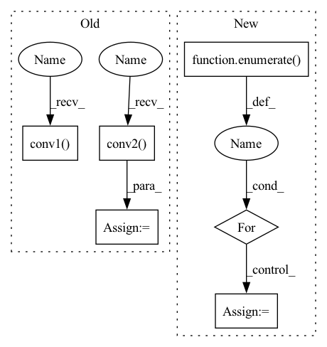

Pattern ID :8320
Before Change
if self.use_bn:
output = F.relu(self.bn1(self.conv1(input_data)))
point_feature = F.relu(self.bn2(self.conv2( output) ))
output = F.relu(self.bn3(self.conv3(point_feature)))
output = F.relu(self.bn4(self.conv4(output)))
output = F.relu(self.bn5(self.conv5(output)))
else:
output = F.relu(self.conv1( input_data) )
point_feature = F.relu(self.conv2(output))
output = F.relu(self.conv3(point_feature))
output = F.relu(self.conv4(output))After Change
raise RuntimeError("shape of x must be of [Batch x 3 x NumInPoints]")
output = input_data
for idx, layer in enumerate( self.layers):
output = layer(output)
if idx == 1 and not self.global_feat: point_feature = output
if self.global_feat:
return outputIn pattern: SUPERPATTERN
Frequency: 3
Non-data size: 6
Instances Fragment ID: 29095098
Project Name: vinits5/learning3d
Commit Name: c324ac5d5f8d9eb65711625b30b3067ad425b739
Time: 2020-03-21
Author: vinitsarode5@gmail.com
File Name: models/pointnet.py
M Class Name: PointNet
N Class Name: PointNet
M Method Name: forward(2)
N Method Name: forward(2)
M Parent Class: torch.nn.Module
N Parent Class: torch.nn.Module
M File Name: models/pointnet.py
N File Name: models/pointnet.py
M Start Line: 38
M End Line: 57
N Start Line: 57
N End Line: 68
Before Change
if self.use_bn:
output = F.relu(self.bn1(self.conv1(input_data)))
point_feature = F.relu(self.bn2(self.conv2( output) ))
output = F.relu(self.bn3(self.conv3(point_feature)))
output = F.relu(self.bn4(self.conv4(output)))
output = F.relu(self.bn5(self.conv5(output)))
else:
output = F.relu(self.conv1( input_data) )
point_feature = F.relu(self.conv2(output))
output = F.relu(self.conv3(point_feature))
output = F.relu(self.conv4(output))After Change
raise RuntimeError("shape of x must be of [Batch x 3 x NumInPoints]")
output = input_data
for idx, layer in enumerate( self.layers):
output = layer(output)
if idx == 1 and not self.global_feat: point_feature = output
if self.global_feat: Fragment ID: 29095096
Project Name: vinits5/learning3d
Commit Name: c324ac5d5f8d9eb65711625b30b3067ad425b739
Time: 2020-03-21
Author: vinitsarode5@gmail.com
File Name: models/pointnet.py
M Class Name: PointNet
N Class Name: PointNet
M Method Name: forward(2)
N Method Name: forward(2)
M Parent Class: torch.nn.Module
N Parent Class: torch.nn.Module
M File Name: models/pointnet.py
N File Name: models/pointnet.py
M Start Line: 38
M End Line: 57
N Start Line: 57
N End Line: 68
Before Change
self.relu = nn.ReLU(inplace=True)
def forward(self, inputs):
C4_lat = self.conv1( inputs[0])
C5_lat = self.conv2( inputs[1])
Cglb_lat = self.conv3(inputs[1])
return self.relu(C4_lat + C5_lat + Cglb_lat)
After Change
def forward(self, inputs):
out = None
for i, x in enumerate( inputs):
layer = getattr(self, f"conv{i+1}")
x = layer(x)
out = x if out is None else x+out
layer = getattr(self, f"conv{i+2}") Fragment ID: 29095077
Project Name: zhanghengdev/mutualguide
Commit Name: 77156267d218aaa468e504be0ed373179fc281ee
Time: 2021-11-26
Author: zhangheng19931123@gmail.com
File Name: models/neck/ssd_neck.py
M Class Name: CEM
N Class Name: CEM
M Method Name: forward(2)
N Method Name: forward(2)
M Parent Class: nn.Module
N Parent Class: nn.Module
M File Name: models/neck/ssd_neck.py
N File Name: models/neck/ssd_neck.py
M Start Line: 26
M End Line: 29
N Start Line: 34
N End Line: 41